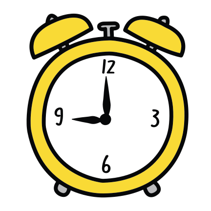

Claude Code is a thing you type into your computer's terminal. You talk to it. It can read your files, write new ones, run commands, and remember things between sessions.
It's not a website. It's not a copilot in your sidebar. It runs in a terminal window. The same place a developer would run code.
Underneath, it's Claude (the AI made by Anthropic) wired up to your computer in a useful way.
The PDF in your hands is a snapshot. The real version of this book lives on the internet, in what engineers call a "repo." If you've heard "git repo" thrown around and felt left out, congrats, it's a folder. Engineers have a special word for folder. That's the whole mystery.
By the time you're reading this, the online version has probably gotten newer.
You can hand off the tedious stuff. The "I have this file, can you rename it and update the references" stuff. The "organize my downloads folder by date" stuff. The "write me a checklist for the trip I'm planning" stuff.
It's not going to replace you. It's going to handle the work that's beneath you so you can do the work that isn't.
Honest answer: maybe parts of it, probably not the whole thing.
The people who lean hardest into AI tools tend to climb faster, not get replaced. The people who refuse to touch it tend to get left behind. Neither's a great option.
What works best: learn enough to know what it's good at and what it isn't, then use it where it actually helps. Ignore the hype where it doesn't.
Short version: your conversations go to Anthropic's servers to get processed. Files Claude reads stay on your computer unless you explicitly ask it to share them somewhere.
By default it can't access the internet. That's important. If you don't give it the wifi keys, it can't phone home with your stuff.
It does, sometimes. Confidently. With zero hedging. That's the most important thing about it to remember.
The fix isn't to never use it. The fix is to never trust it blindly. Especially on facts, names, dates, code, or anything that matters.
You're the human. You're the check.
Using AI is going to take mental energy you weren't spending before. Some days it'll save you hours. Some days it'll waste an hour and you'll feel dumb. That's normal.
If you start to feel burned out, stop. Use it less. Letting a tool run you is the same trap as the old job, just with a new tool.